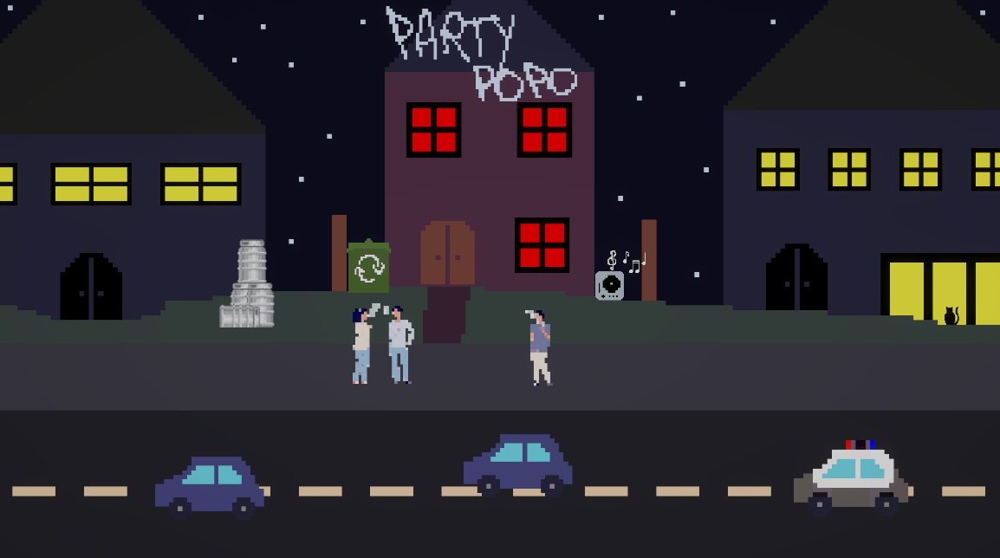
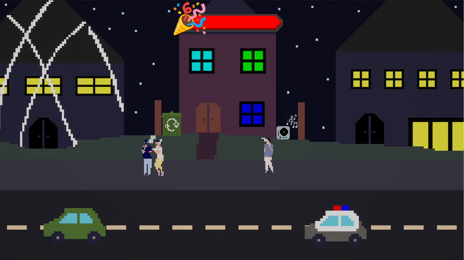

Party Popo
A 2D party game where players have to hide their party from the Popo's.

Project Information
Type: Game / Game Jam
Engine: Unity
Tools: Unity, Photoshop
Duration: 32 hours
Team: 2 people
My Role: Game Developer / Programmer
About the Project
You're throwing the biggest house party of the year, but be careful, the police is close! If you hear them coming, turn off the music and the lights, bring the smokers inside and clean up the mess! But be careful not killing the party either...
Party Popo is a 2D party game where players have to hide their party from the Popo's. The game was made in 32 hours for a DAE Howest Game jam.
My Role
In this game jame, I was the main programmer, while my teammate was the main artist. I was responsible for programming the gameplay mechanics and implementing the art assets into the game. I also looked for and implemented sound effects and music into the game.
- Gameplay programming
- Game design
- Sound Implemtation
Gameplay
PartyCrasher is a fast-paced party-management game where the player must keep a party running while dealing with an increasing number of people and unexpected events. Players interact with objects in the environment, hiding lights, muting music, and cleaning up messes, before the police arrive. As the party becomes more chaotic, the challenge increases, requiring the player to react quickly and keep the party under control for as long as possible. But be careful, if the party is too boring, the party bar will drop and when it reaches 0, the party is pooped!

Final Result
The final product is a fun, simple and functioning game. I'm proud that me and my teammate thought of, designed and made this in 32 hours.